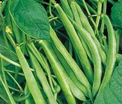
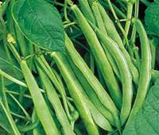

AGR 301 :: Lecture 08 :: FRENCH BEAN Phaseolus vulgaris

- Rajmash, kidney bean, common bean etc.,
- In India
- the fresh pods for vegetable is called as faras and dried pulse as rajmash
- More fleshy tender pods of round types with less string are for vegetables compared to flat pods
- Dried seeds are highly nutritious
Area
- It is extensively cultivated in 5 major continents
- Brazil is the leading country
- In India it is only a minor pulse
- Cultivated in hills during Kharif
- Small areas in northern plain during rabi
 
- Origin
- Highlands of middle America and Andes
- Cultivated over a period of 7000-8000 years
- Varieties in India are : PDR 14, HUR 15, VL 63
- Duration 110-120 days, seed weight around 400mg
- Soil
- All types of soil
- Poor to fertile
- Well drained soil is more suitable since sensitive to salinity and alkalinity
- Field preparation
- As for other pulses except rice-fallows
- Medium tillage is sufficient
- Seed treatment
- For seed borne pests and diseases
- Rhizobium for nodulation
- Season
- NW Plains – end of October
- NE Plains – Second fortnight of November
- Soil moisture availability decides the time
- Delay in sowing end with terminal drought
- Seed rate
- Depends up on the size of the seeds & spacing
- French bean : 120-140 kg (350-450mg)
- Method of sowing
- Broadcasting and planking
- Drilling manually
- Seed drill sowing
- Depth of sowing
- Since all cool season pulses are hypogeal can be planted deep depending on the moisture
- Nutrient Management
Ecosystem |
N |
P2O5 |
K2O |
S |
Irrigated |
100 |
60 |
20 |
20 |
- One or two supplemental irrigation is needed
- Weed management
- All methods to be employed
- Herbicides can also be as per kharif pulses
- Cropping systems
- Cereal – legume is always good
- Cereals in Kharif
- They also under mixed community with winter cereals like wheat & barley
- Harvest
- Over ripening leads to great loss of yield in French bean
- Staggered harvesting is one way
- Cut entire plant and carry with moisture & then dry, thrash and clean
- Store the seeds at 8 -10 % moisture
Multiple choice questions
- Common name of French bean in Hindi ___________
a. Navy bean b. Kidney bean c. Rajmash - Protein content in dried French bean seeds ________
a. 18% b. 25% c. 23% - French bean belongs to the family ________
a. Tiliaceae b. Leguminoceae c. Papilionaceae - Recommended seed rate for French bean is _____kg/ha
a. 120 b. 150 c. 60 - Fertilizer recommendation for French bean is _____kg/ha NPK
a. 100:60:20 b. 100:20:0 c. 150:50:50
| Download this lecture as PDF here |